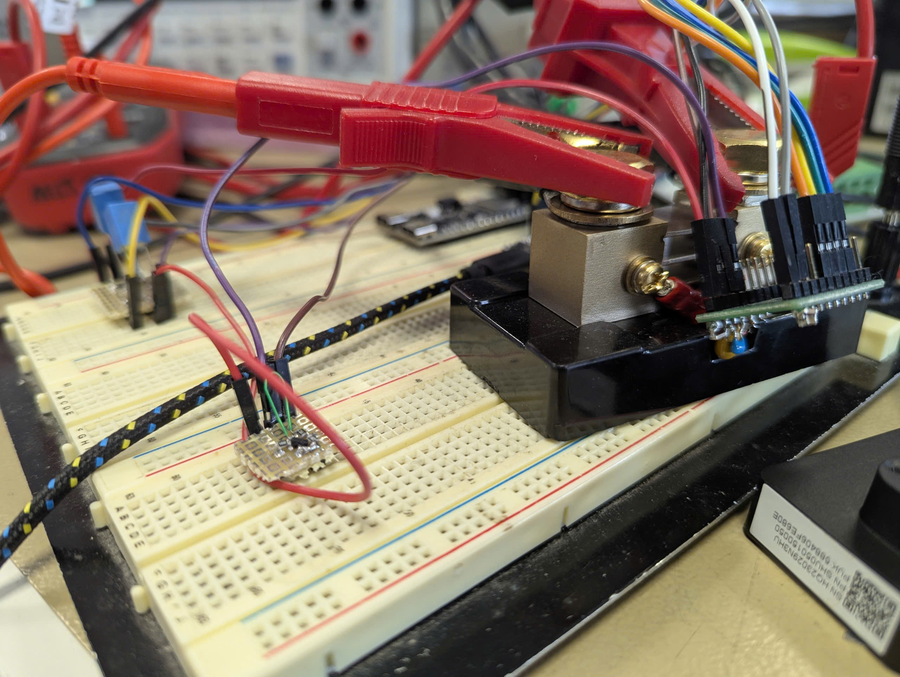
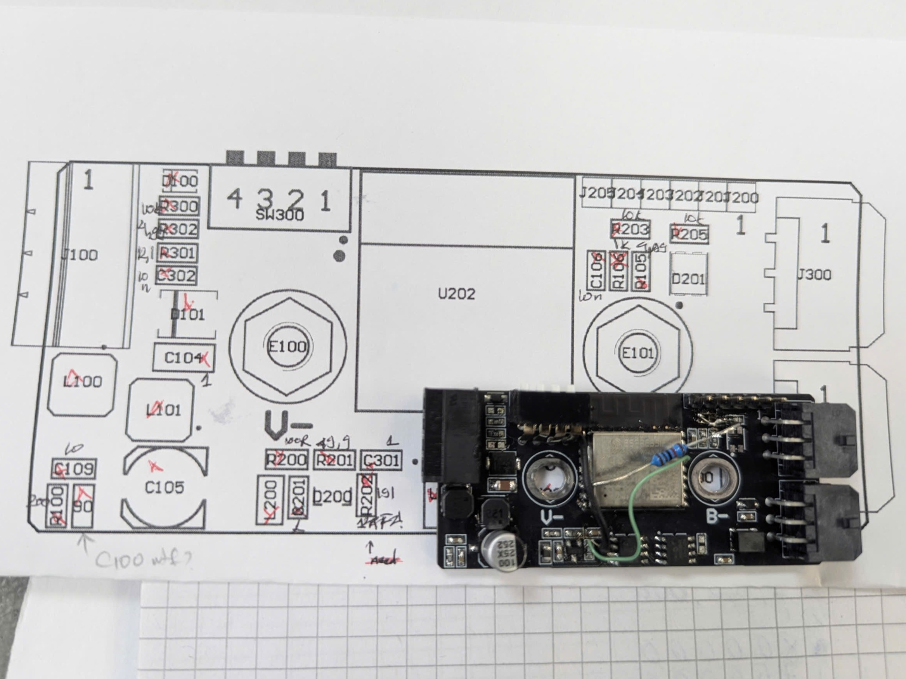
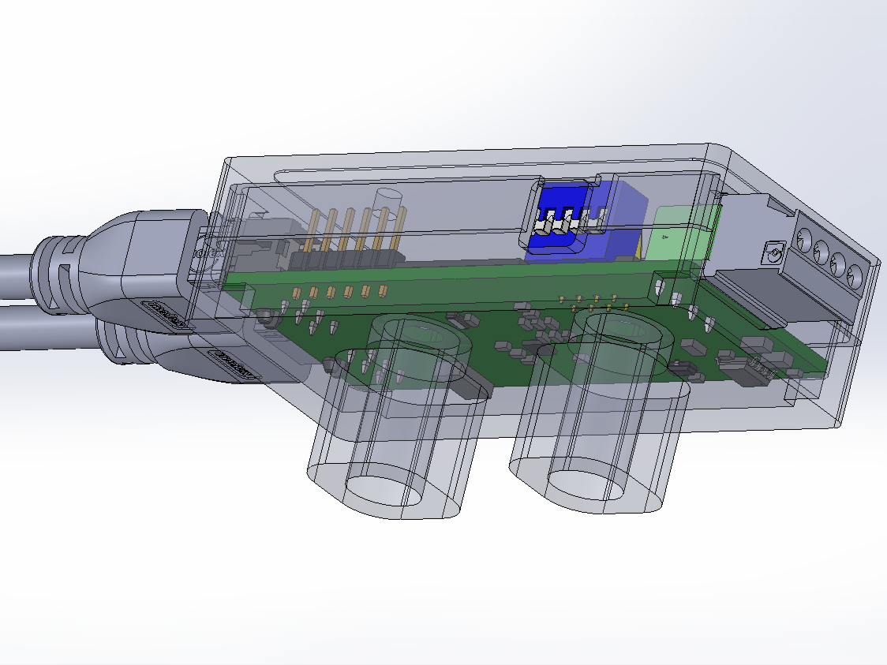

Overview
During my summer internship at Cristec, I worked on developing a low-power battery current monitoring system. The idea was fairly straightforward: measure current through an external shunt resistor and send the readings wirelessly over Bluetooth Low Energy (BLE), with CAN communication also incorporated into the system.
I got to work on quite a bit of the development process, from selecting components and putting together the first breadboard prototype to designing the PCB, writing firmware, and testing the electronics. I also worked on a 3D-printed enclosure for the device.
Hardware Development
I started by looking into different ESP32 platforms, Bluetooth stacks, and component options. After comparing the available alternatives, I settled on a platform that fitted the project's requirements and the company's existing development environment.
The analogue front-end was built around an MCP3561 precision ADC, communicating with the microcontroller over SPI. The surrounding circuitry included an external voltage reference, voltage divider, LC filtering, decoupling, and a 32.768 kHz crystal.

I first put together the circuit on a breadboard to get the different components working together before moving on to a proper PCB. Once the basic setup was working, I designed a compact two-layer board in Altium Designer.
This involved creating custom schematic symbols and footprints, selecting components, and figuring out how to fit everything onto a relatively small board. Component height, connector placement, and routing all had to be taken into account.


Enclosure Design
Alongside the electronics, I also worked on the mechanical side of the project. I designed a compact enclosure to accommodate the PCB and its connectors, keeping the available space and component dimensions in mind.

It was a nice change of pace from circuit design and firmware, and another opportunity to work through the practical constraints of turning an electronic design into a physical device.
Firmware and Power Optimisation
The firmware was developed in C using ESP-IDF and PlatformIO. One of the main challenges was keeping power consumption low without sacrificing BLE connectivity.
I configured modem sleep and investigated the behaviour of different Bluetooth stacks. There was quite a bit of trial and error involved, but through repeated measurements and adjustments, I managed to bring average BLE advertising and disconnected power consumption below 1 mA.
I also implemented and tested different configurable measurement and filtering functions, including rolling averages, spike detection, zero-current correction, and exponential moving averages. Sampling rates and measurement parameters could be configured and stored in non-volatile memory.
Testing and Debugging
A fair amount of the internship was spent in the lab, measuring things, changing things, and trying to work out why something wasn't behaving as expected.
I used laboratory power supplies, programmable electronic loads, oscilloscopes, and multimeters to characterise the measurement circuitry. I tested the ADC across different gain and oversampling ratio settings to see how its performance changed across different current ranges.
One particularly frustrating issue involved the microcontroller's behaviour during sleep. Some GPIO pins continued to leak voltage even when configured with pull-downs. The SCLK line was especially troublesome, as it affected the MOSFET controlling power to parts of the measurement circuit.
It took a fair bit of investigation to track down the problem. What initially looked like an issue with the power switching circuitry turned out to be related to the microcontroller's pin behaviour in sleep mode. A good reminder that things don't always behave quite as expected once you get them onto a physical board.
Results
By the end of the internship, I had developed and tested the battery monitoring prototype, designed its PCB and enclosure, and implemented the main firmware functionality.
- Achieved average BLE advertising and disconnected power consumption below 1 mA.
- Achieved approximately 0.5% measurement accuracy below 10 A and approximately 1% above 10 A during prototype testing.
- Tested current measurements across a range of 0–100 A.
- Designed a custom two-layer PCB in Altium Designer.
- Developed configurable firmware for measurement, filtering, and communication.
- Designed a 3D enclosure for the electronics.
Technologies and Tools
C · ESP-IDF · PlatformIO · ESP32-C3 · BLE · SPI · MCP3561 ADC · Altium Designer · PCB Design · CAD · Oscilloscope · Digital Multimeter · Programmable Electronic Load · SMD and Through-Hole Soldering